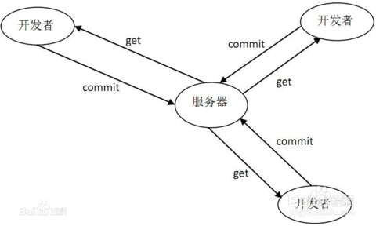
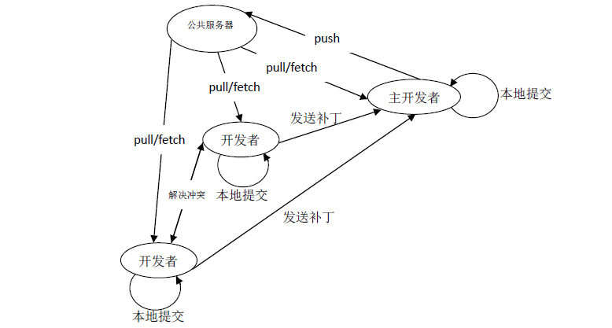

Created by Simon CHEN
The most widely used modern version control system in the world today.
集中式管理，学习难度低，上手简单
分布式管理，学习难度相对较高

$ git log other..
$ git log ..other
针对同一个项目，Git可以设置不同层级的版本库，或者通过不同的分支实现对发布的控制。
eg. 设置只有管理员才有权限Push的版本库或者分支，用于稳定发布版本的维护。
$ git config --global user.name "9527"
$ git config --global alias.st status